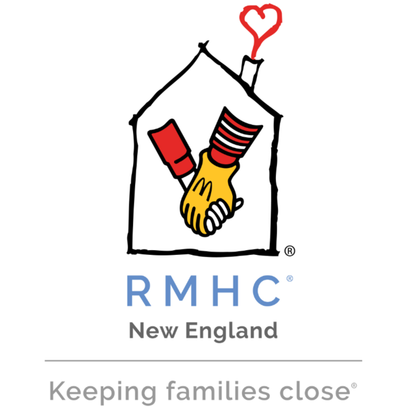

Education
College of the Holy Cross

Worcester, MA
2019 - 2023
B.A. Mathematics, Computer Science
- Member of Pi Mu Epsilon - - the national honor society in mathematics
- Co-Chair & E-Board Member, Pinoys of Worcester
- Co-Chair, Holy Cross Climbing Club
Loyola High School of Los Angeles
Los Angeles, CA 2015 - 2019 High School DiplomaCore Skills
- JavaScript
- HTML
- CSS
- Python
- Tableau
- C++
- C
- Github
- Microsoft Office
Other Skills
- VSCode
- Pandas
- Numpy
- Bokeh
- Scipy
- Latex
- Windows
- macOS
- vim
- MySQL
Work Experience
May Institute
Data AnalystI started working in the Quality Improvement (QI) department under the Compliance team, but soon transitioned over to the Clinical Informatics team where I provide insight and data to clinicians and executive leadership
- Maintained and updated 20 Tableau dashboards to provide real-time insights for quality improvement and compliance metrics, improving decision-making and operational efficiency.
- Supported data preparation for Tableau reports by cleaning, formatting, and pivoting large datasets in Excel, ensuring data integrity and consistency for reporting purposes.
- Collected and analyzed data for weekly and monthly team meetings, providing actionable insights and trends to support continuous quality improvement initiatives.
- Led the design, development, and analysis of a comprehensive survey sent to directors and above, utilizing Excel for data cleaning and Tableau for visual analysis to present findings to C-level executives and VPs.
- Produced detailed reports and visualizations for executive leadership, ensuring that actionable insights were presented in a clear and accessible format to drive organizational improvements.
- Developed and implemented 4 interactive dashboards in Tableau to track clinical performance, patient outcomes, and operational efficiencies.
- Wrote and optimized 3 Python scripts (in Jupyter) for data processing, automation, and analysis, improving the team’s ability to quickly generate insights and reports.
- Cleaned, transformed, and loaded large datasets into Microsoft SQL Server databases as part of the ETL process to ensure data was ready for Tableau reporting.
- Collaborate cross-functionally with clinical teams to understand data requirements, ensuring that dashboards and reports met the needs of various stakeholders.
Central Rock Gym
Desk StaffGreeted members and new climbers at the front desk, ensuring everyone feeling welcome and comfortable in the gym
- Managed membership platform tracking sales, customer, and program data; analyzed metrics to uncover usage trends and opportunities to optimize offerings.
- Administered Customer Relationship Management (CRM) system centralizing visitor information and engagement analytics; identified key areas to enhance user satisfaction scores through data-informed recommendations.
GW&K Investment Management
Investment Management & IT InternRotational internship program where I worked with different teams across the company with an emphasis on the Wealth Managment and IT teams.
- Conducted in-depth analysis of potential equity investments using financial modeling techniques, resulting in a comprehensive recommendation report that informed senior investment managers’ decision-making.
- Collaborated with cross-functional teams including Operations, Wealth Management, and IT to streamline data management processes and ensure accurate tracking of key performance metrics.
- Utilized Python data science packages to create interactive visualizations of wealth management team and big data, providing insights for strategic business solutions and decisions
- Created and implemented SQL queries for the system architect to use when allocating trading data.
Ronald McDonald House Charities of New England 
Finance & IT InternRemote internship where I worked on projects with the head of Finance and assessed software solutions to make cut costs and maximize efficiency
- Streamlined the recurring accounting activities for the company by setting up memorized transactions and automating reconciliations, resulting in a time savings of 15 hours per week.
- Developed Excel models to automate revenue recognition, expense reporting, and bill pay practices, reducing errors by 90% and increasing efficiency by 25%
- Provided expert advice on databases and software systems, assisting team members with troubleshooting issues and reducing IT support tickets by 30%.
Projects
Office Location Analysis
Summer project for GW&K Investment Managment. Conducted thorough data analysis using Python data science libraries to identify trends in population change and growth across the United States. Utilized predictive modeling techniques to determine cities likely to experience high median incomes, providing insight for potential new office locations.
DetailsRecursive Descent Game
Final project for programming languages class. Created an "auto-battler" adventure game with two groupmates using Ruby and Ruby2d. Dr. Racket has stolen all of the programming languages, and we must assemble teams to battle against his goons and free the programming languages!
Details
Gutt Design Website
Built and designed portfolio website for client (friend) to display his archiecture work. The website's tech stack includes React, HTML, CSS, and js.
Details
Pokemon Network Analysis
Final project for Computational Network Theory Course, where a group two groupmates and I analyze different generations of Pokemon based on their connectivity and the networks formed between different Pokemon. From the connections and networks, we could predict good and bad battle matchups.
DetailsAkari Puzzle Solver
Used a SAT solver to solve the light up puzzle. Given five puzzles, the program returns the solutions for the given puzzle
Details